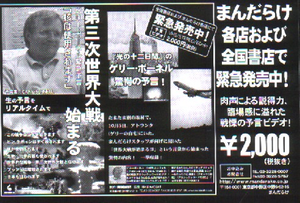

Free talk 雑談。
（110)大予言？
先日、所用で名古屋へ出かけたとき、ぶらりと「まんだらけ」に寄った。もちろんなにか麻雀コミックの出物でもないかと思ってのことだ。残念ながらというか、当然ながらσ(-_-)の求めるような麻雀コミックはなかった。それでも数冊、適当にコミックを買うことにしてカウンターに持ち込んだ。
精算を待っているとき、ふと脇をみると、「第３次世界大戦始まる」という見だしのショックなチラシがおいてある。手にとってよく見ると、ゲリー・ボーネルというアメリカ人が、今回のアフガン事変の行く末について予言したもの。

予言に寄れば、今回のアフガン事変は第３次世界大戦の始まりだという。闘いアフガン地域だけでなく、世界を巻き込んで３年半はつづき、その過程では核兵器が使用されるという。ビンラディンはすぐ殺されるが、ブッシュ大統領も暗殺されるという。(゜0゜) 恐ろしさでいえば、ノストラダムスより恐ろしい。 しかし今日（H13.11.19）の状況では、どうやら第３次世界大戦やら核兵器までの心配はなさそう。。。
この予言はまんだらけのスタッフが別な取材でボーネル氏にインタビューしているとき、突然、始まったという。驚いたスタッフが、この重大予言を世界に伝えるために急遽ビデオにして発売することにしたそうだ。う〜ん、なんとも....